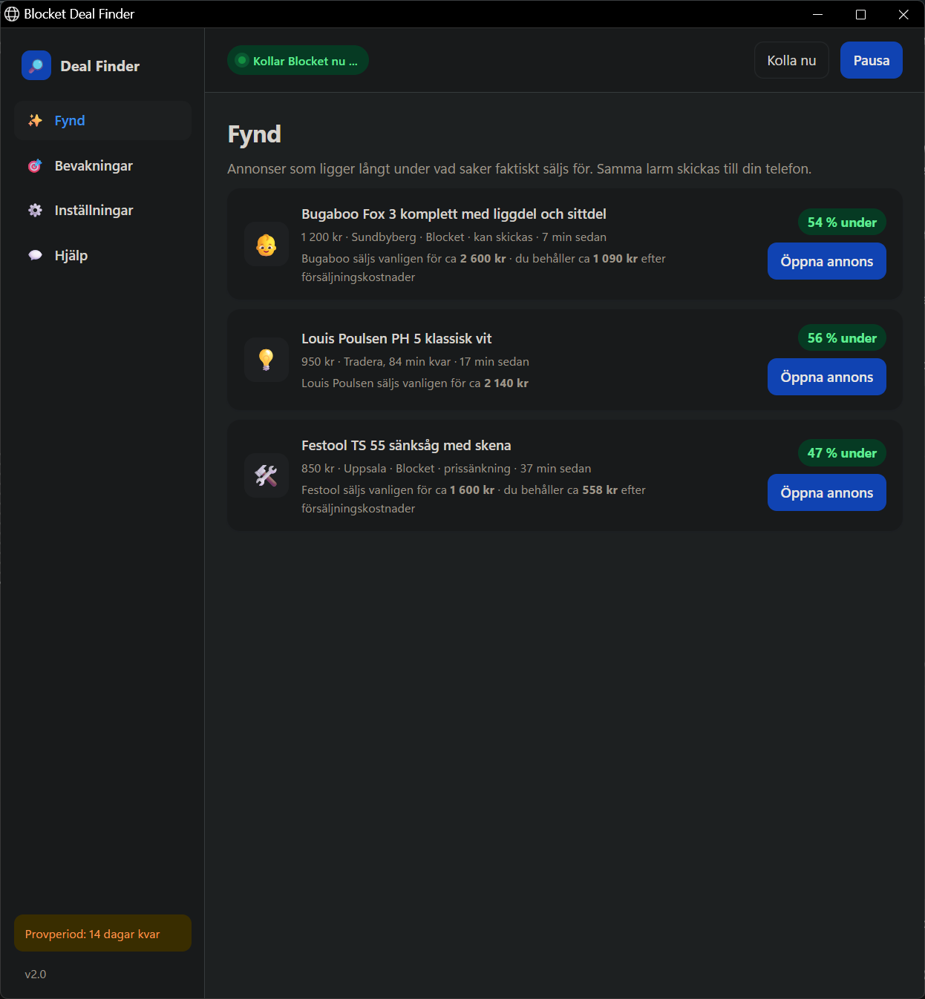

Blocket Deal Finder är ett litet Windows-program som bevakar Blocket (och Tradera-auktioner samt Facebook Marketplace om du vill) dygnet runt, lär sig riktiga försäljningspriser, och pushar till din telefon inom minuter från att en annons läggs ut. Du köper. Programmet köper aldrig.
Ladda ner, prova gratis i 14 dagar Köp licens, 249 krWindows 10/11. Ingen installation, en fil. Allt körs på din dator.

Skillnaden mot en vanlig Blocket-bevakning: referensen är vad saker säljs för, inte vad folk begär. Utropspriserna ligger ofta 40–50 % över.
Med en gratis nyckel från Tradera lär sig programmet vad varje bevakning faktiskt går för, från avslutade auktioner. Utan nyckel skalas Blockets utropspriser ned till typiskt försäljningsvärde.
Blocket varje 10:e minut. Tradera-auktioner som slutar inom två timmar långt under referensen. Facebook Marketplace några gånger om dagen (valfritt, via Apify).
Verktyg (Festool, Hilti, Makita), barnvagnar (Bugaboo, Thule), elcyklar, designlampor, Weber, Automower, roddmaskiner, kameraobjektiv. Ändra, ta bort, lägg till egna med ordfilter.
Larmar också när en annons du redan sett sänks till fyndnivå, inte bara på nya annonser.
Varje larm räknar ut vad du behåller efter försäljningskostnader, så du ser direkt om det är värt en resa.
Ingen inloggning, inget konto hos oss, ingen data lämnar din dator utom pushnotisen till din egen ntfy-kanal. Fliken Fynd sparar alla larm.
Fönstret kan stängas, bevakningen fortsätter i bakgrunden (ikonen nere vid klockan). All hjälp finns inne i programmet.
Engångspris, en person, hur många datorer som helst. Alla uppdateringar av version 1 ingår. 14 dagars gratis provperiod först, utan kortuppgifter.
Köp licens (betallänk kommer inom kort)
Efter köpet får du en licensnyckel kopplad till din e-postadress inom ett dygn. Skriv in e-post och nyckel under Inställningar, Licens, i programmet.
Ja, bevakningen körs på din dator. Kryssa i "Starta med Windows" och stäng av viloläge, eller kör på en gammal laptop som får stå på.
Nej, avsiktligt. Blocket tillåter det inte och det skulle köpa fel saker. Programmet ger dig försprånget; du kollar annonsen och bestämmer.
Med en gratis utvecklarnyckel från api.tradera.com hämtar programmet avslutade auktioner för varje bevakning och räknar median och andel som faktiskt säljs. Utan nyckel används Blockets utropspriser nedskalade med en faktor som är uppmätt mot Tradera.
Programmet är inte signerat med ett dyrt kodsigneringscertifikat, så SmartScreen visar en varning första gången. Källkoden är öppen på GitHub om du vill granska den.
Facebook har inget öppet API. Programmet kan använda tjänsten Apify som hämtar annonser åt dig för cirka 6 öre per annons, med 5 dollar gratis per månad. Helt valfritt.
Då uppdaterar jag programmet. Uppdateringar av version 1 ingår i priset.
Inte som färdig fil ännu.